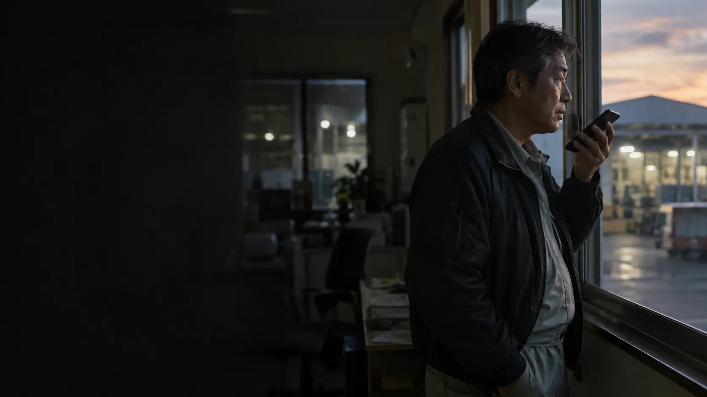
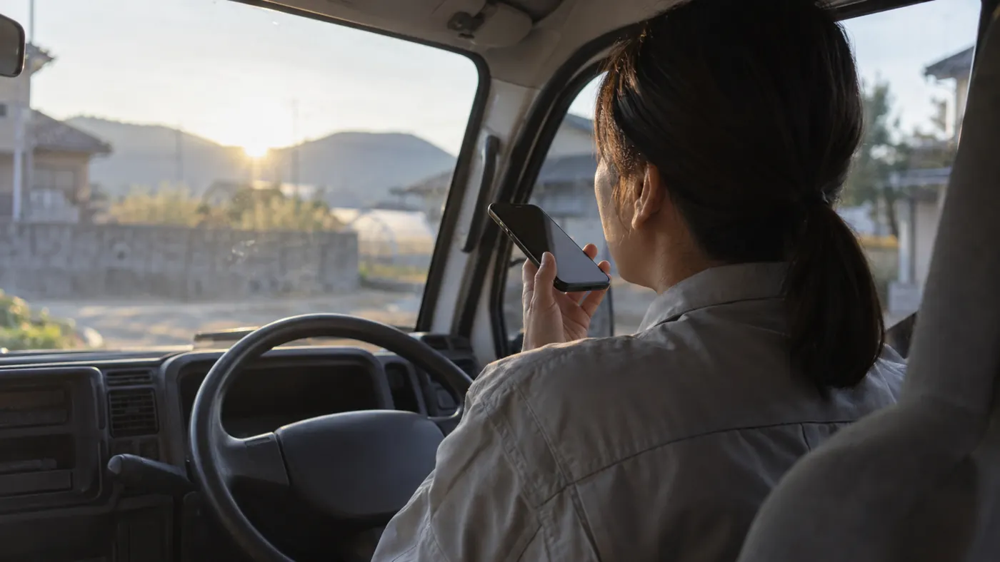
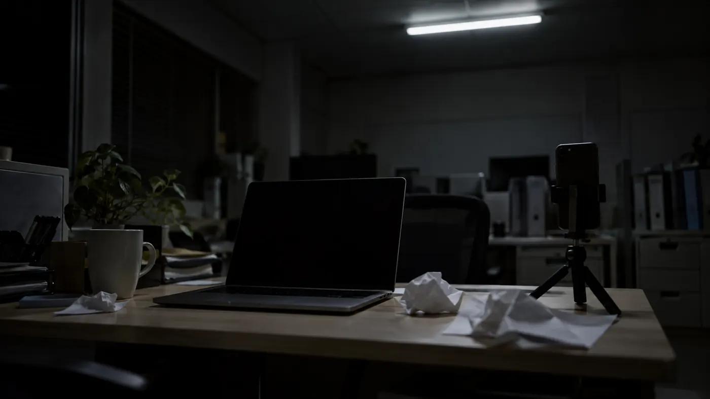

背景写真は生成イメージ中小企業の経営者のための、動画発信の自動化 話すだけチャンネル
撮り直し3回目で、
今週も出せなかった
スマホに話した声から、AIが資料と解説動画を作り、会社のYouTubeとSNSへ届けます。社長がするのは、話すことと、公開前の確認だけです。
見本は当社の説明動画で、資料からアバター動画を作る部分をお見せしています。料金はページの後半にあります。
FROM VOICE TO CHANNEL画面イメージ。見本の会社は架空です
- 01済
話す
7:40 録音 9分12秒 - 02済
文字にする
- 03済
資料にする
- 04済
解説動画にする
- 05確認後
届ける
- YouTube公開
- X・Instagram告知
- Facebook・LINE告知

まだ、誰にも届いていない。
話したいことは、
社長の頭の中にある
会社の強みも、新しい商品のことも、採用で伝えたいことも、中身はもう社長の中にあります。足りないのは話の中身ではなく、それを外に出す手間をかけられる時間です。
会社の強み
他社と何が違うのか。商談のたびに話している、あの説明。
新しい商品
始めたばかりのサービスや設備。届けたい相手まで、もう見えている話。
採用の話
どんな人と働きたいか。求人票には書ききれない社長の言葉。
社長の考え
値上げの理由、業界の見通し、お客様への約束。朝礼で話したこと。

話したいことは、今週も外に出ない。
撮影から告知まで、
工程が多すぎる
動画の発信が止まる理由は、やる気ではありません。1本を世に出すまでに、少なくとも6つの工程があります。どれか1つで止まると、その週は出ません。
- 台本何をどの順で話すかを決める
- 撮影照明・音・言い間違いで撮り直し止まりやすい
- 編集・字幕切って、つないで、文字を入れる止まりやすい
- サムネイル一覧で目に留まる画像を作る
- 投稿タイトル・説明欄・タグを書いて上げる
- 告知SNSごとに文面を変えて知らせる忘れやすい
このサービスは、6つのうち社長の手から5つを外します。
残るのは、話すことと公開前の確認だけです。
いつもの話を10分だけ。
社長がするのは、
話すことと確認だけ
社長の担当は2つです。話すことと、できあがった一式を見て「公開」を押すこと。文字起こしから告知までは、AIと当社が受け持ちます。
社長がすること
週に1回、合わせて15分ほどの想定です仮
- 01スマホに話す車の中でも、現場でも。台本は要りません。1回10分前後が目安です
- 02確認して「公開」を押す本編・ショート・告知文を1つの画面でまとめて見ます
AIと当社がすること
動画を作る04・05は、当社の「アバター動画スタジオ」で動いています。01〜03と06は提供に向けて準備中です仮
- 01声を文字にする言い直し・脱線を整える
- 02資料にまとめる話の要点を数枚のスライドに
- 03台本を書くページごとに読み上げの文を作る
- 04アバターが解説する動画に字幕と「ライトアップ」編集つき
- 05ショートに切り分ける10・15・30・60秒から選べる
- 06タイトル・説明欄・告知文を書くSNSごとに文面を変える仮
- 07当社スタッフが事前に目を通す誤字や固有名詞の読み間違い仮
- 08YouTubeとSNSへ上げる社長の「公開」のあとに
確認は、1つの画面で
まとめて済ませます
本編・ショート・告知文が並んだ画面を見て、そのままでよければ「公開」、気になる所があれば「直してほしい」を押すだけです。直したあとは、直した所だけをもう一度見ていただきます。
- 試作が3日で出せるようになった理由本編 4分12秒・字幕ありチェック済
- ショート 30秒×3本本編から切り分けチェック済
- SNS告知文 X・Instagram・Facebook・LINE媒体ごとに文面を変えていますチェック済
画面イメージです。実際の画面とは異なります。会社名・数字は架空です。
確認待ちで並んでいた。
1回の話から、
資料と動画と告知文まで
9分ほど話した声が、どこまでの物になるかを見本で示します。話は1回、できあがるのは4種類です。見本の会社と話の中身は架空です。
「えー、今日は新しく入れた機械の話をします。これまで試作品は、お客さんに出すまでだいたい2週間かかってたんですね。それが、この機械を入れてから、早ければ3日で出せるようになった。何が変わったかというと、まず…」
言い直しや「えー」は、文字にする段階で整えます。
- OUTPUT 1資料
説明用のスライド6枚
話の要点を、見出し・図・数字で整理。PDFでも受け取れるので、営業資料としても使えます。
- OUTPUT 2本編
アバターの解説動画
資料を映しながら、アバターが説明する動画です。字幕つき。話している所を明るく残す「ライトアップ」編集も入れられます。
- OUTPUT 3ショート
10〜60秒の短い動画
本編を、話の切れ目で切り分けたもの。長さは10・15・30・60秒から選べます。
- OUTPUT 4告知文仮
SNSごとの告知文
試作品が、最短3日で出せるようになりました。新しい機械で何が変わったのか、社長が4分で話しています。▶ YouTubeで見る
出せる数は増えますが、見られるかどうかは別の話です。再生数・問い合わせ・採用の結果はお約束できません。約束できるのは、毎週止まらずに出し続けられる形をつくることです。
画面に出る人は、3通りあります
顔を出したくない社長も、資料だけの動画にできます。どれを使えるかはプランによります。
- 社長の分身仮社長ご本人の顔と声のアバター。最初に一度だけ、撮影と録音をお願いする想定です。
- 案内役のアバター当社が用意する説明役が話します。社長の顔は出ません。
- 資料だけ人物を出さず、資料を画面いっぱいに映して、声と字幕で説明します。
当社の説明動画も、この仕組みのアバターで作っています。代表・白石崇のアバターが資料を説明する見本。音声からではなく、資料からアバター動画を作る部分をご覧いただけます。
見本の動画を見るここからは、条件の話です。他のやり方との比較、料金、自動にできない所、向かない会社の順に並べました。
凝った1本なら外注を。
毎週続けるならこちら
動画の発信には、ほかにもやり方があります。作り込みの質では、制作会社のほうが上です。このサービスが向くのは、毎週止まらずに出すことを優先したいときです。
| 比べる点 | 自分で撮るスマホ・社内で | 制作会社に外注プルークスの公開価格 | YouTube運用代行TaTap の公開価格 | AIアバターツールHeyGen・Synthesia | 話すだけチャンネルこのサービス（仮称） |
|---|---|---|---|---|---|
| 社長の手間 | 台本・撮影・編集・投稿まで全部 | 打ち合わせと撮影の立ち会い | 企画の確認と撮影への出演 | 台本書き・画面操作・投稿は自分 | 話すことと、公開前の確認 |
| 費用の目安 | 機材代と社長の時間 | サービス紹介・営業用で1本50〜100万円（プルークス） | 最小構成で月30万円（ショート4本＋進行費・税別）、初期費用10万円 | 月29ドルから（HeyGen・Synthesiaの月払い） | 月4本で月15万円（税別・仮） |
| 作り込みの質 | 撮る人の腕による | 高い。演出・撮影を作り込める | 企画・撮影・編集まで人が作る | ツールの型の範囲 | 資料とアバターの型の範囲 |
| 顔出し | 必要 | 実写なら必要 | 実写なら必要 | 不要（アバター） | 不要。案内役か資料だけ（分身は月8本プランから・仮） |
| 毎週続けるには | 社長の時間しだい | 1本ごとに発注と打ち合わせ | 契約の本数どおり進む | 自分の時間しだい | 契約の本数どおり進む |
| YouTube・SNSへの投稿 | 自分で | 制作が中心（公開価格の範囲） | 投稿まで含む | 料金ページに投稿機能の記載なし | YouTubeとSNSの告知まで |
| 企画の提案 | なし | あり | あり | なし | 月1回の振り返り（月8本プランから・仮） |
読み手にとって有利読み手にとって不利色の無いマスは、どちらとも言えない点
出典：各社公式サイトの公開情報（2026年10月16日確認）。プルークス 料金／TaTap YouTube運用代行／HeyGen Pricing／Synthesia Pricing。外貨の料金は税の表記なし。各社の条件は変わることがあるため、最新は各社のページでご確認ください。
この表で勝っているのは、社長の手間と続けやすさ。
作り込みの質では、負けています。
月15万円から。
本数と届け先で3段階
3つのプランの違いは、月に出す本数、届け先の数、画面に出るアバターです。プランの中身は、いまの案です仮。
週に1回、社長の話を出す。まず続くかを確かめたい会社に
- 本編の動画
- 月4本
- 1本の長さ
- 3〜5分が目安
- ショート
- なし
- 届け先
- YouTube＋SNS2つ
- アバター
- 案内役1人
- 直し
- 1本につき1回
- 振り返り
- なし
週2回。社長の分身で話し、ショートでSNSにも出したい会社に
- 本編の動画
- 月8本
- 1本の長さ
- 3〜5分が目安
- ショート
- 本編1本から3本
- 届け先
- YouTube＋SNS4つ
- アバター
- 社長の分身1人
- 直し
- 1本につき2回
- 振り返り
- 月1回・30分
採用用・商品用など、チャンネルや話し手を分けたい会社に
- 本編の動画
- 月12本から
- 1本の長さ
- 3〜10分が目安
- ショート
- 本編1本から5本
- 届け先
- YouTube複数＋SNS4つ
- アバター
- 社長＋社員など3人まで
- 直し
- 1本につき2回
- 振り返り
- 月1回＋企画の相談
※ プランの中身・税の扱いは、いまの案です仮。初期設定（チャンネルとSNSの連携、アバターの作成）の費用、契約期間、本数を超えたときの扱いは調整中です。ご相談のときに、書面でお出しします。
※ 50万円〜の金額を決めるのは、本数・チャンネル数・話し手の人数。
※ XやLINEなど一部のSNSは、投稿や配信の量に応じた利用料が別にかかります（くわしくは「自動にできない所」）。
迷ったら、月4本から。
続けられると分かってから増やしてください。
自動にできない所も、
先にお伝えします
「全部自動」と言い切れない所があります。契約のあとで知るより、いま知っていただくほうがよい、というのが当社の考えです。
noteは、自動では投稿しません
noteの公式APIは、法人向けの「note pro」を契約した会社に限られます。それ以外の場合は、当社が書いた紹介文を、御社の手で貼っていただく形です。
Xの自動投稿には、1件ごとの利用料
XのAPIは使った分だけの課金で、リンク付きの投稿は1件0.2ドルです（2026年10月時点の公式料金）。プランの料金に含めるかは調整中です。
Instagramは「プロアカウント」が条件
自動で投稿できるのは、Instagramのプロアカウントからです。個人用のアカウントのままでは使えません。
LINEは、送る通数で料金が変わる
LINE公式アカウントは、無料プランだと月200通まで。友だちが多い会社は、月5,000円（税別）のプランなどへの切り替えが要ります。
YouTubeは、御社の許可と申告から
最初にいただくのは、御社のチャンネルへ当社が投稿する許可です。動画はAIで作ったものとして、YouTubeの「改変・合成されたコンテンツ」の項目で申告します。
話の中身が正しいかは、社長にしか分からない
誤字や読み間違いなら、当社でも気づけます。ただ、数字や約束ごとの正しさを確かめられるのは社長だけ。だから、公開前の確認を既定にしています。
毎週話すことがない
会社には向きません
このサービスは、話す中身があることが前提です。次のどれかに当てはまるなら、いまは契約しないほうがよいと思います。
- 月に4回、話したいことが思いつかない月4本でも、話の中身がなければ15万円は高い買い物です。
- 凝った映像で、ブランドを作りたい撮影と編集に手をかける1本なら、制作会社のほうが向いています。
- 社名を出して発信するか、社内で決まっていないまず、何を外に出してよいかを社内で決めるのが先です。
- YouTubeが、もう自分たちで回っている毎週出せているなら、いまのやり方を続けるほうが安く済みます。
相談の結果、「いまは何も契約しないほうがいい」とお伝えすることもあります。
始める前に、
よく聞かれる7つのこと
ご相談のときによく聞かれそうなことを、先にまとめました。仮の付いた答えは、いまの案です。
自分の顔と声のアバターを作れますか
作れる想定です仮。最初に一度だけ、撮影と声の録音をお願いします。使うのは、書面で同意をいただいたうえで、ご本人の動画だけです。
話した中に、社外に出せない話が混ざったら
公開前の確認で止められます。文字にした段階・資料にした段階で、当社のスタッフも目を通します仮。気になる所は「直してほしい」から指示してください。
公開したあとで、間違いに気づいたら
YouTubeの動画は、すぐに非公開へ切り替えられます。そのあと直した版を作り、もう一度ご確認いただく流れです。SNSの投稿は、各SNSの機能で削除します。
YouTubeのチャンネルが、まだありません
始められます。チャンネルの開設から、当社が一緒に進めるので心配はいりません。チャンネルとSNSのアカウントは、御社の名義で作る前提です仮。
AIで作った動画だと、見る人に分かりますか
分かるようにします。YouTubeには、動画が「改変・合成されたコンテンツ」かを申告する項目があり、当社はAIアバターの動画として申告して上げます仮。説明欄にも、AIアバターで作った旨を書きます。
確認を外して、全部自動にできますか
外せます仮。ただ、話の中身の間違いは、社長にしか気づけないことが多いため、最初の3か月は確認ありをおすすめしています。
途中でプランを変えられますか
月の単位で変えられる想定です仮。本数が足りない月・余る月が続いたら、振り返りのときにご相談ください。
まず、見本の動画を
1本見てください
アバターの話し方が、御社のお客様に合うかどうか。それを確かめるのが最初の一歩です。合いそうなら、ご相談ください。
運営：株式会社ライトアップ（東証グロース 6580）。動画の生成には、当社の「アバター動画スタジオ」を使います。
MARKET DATA
見る人はいる。
足りないのは、出す手
- 01広がり84.9%
50代のYouTube利用率。全年代では81.5%。経営者の世代にも、見る習慣があります。
総務省 情報通信政策研究所「令和7年度 情報通信メディアの利用時間と情報行動に関する調査」2025年12月・n=1,800（PDF） - 02痛み60.0%
人手が不足していると答えた中小企業の割合。発信に人を割く余裕は、多くの会社にありません。
日本商工会議所・東京商工会議所「多様な人材の活躍等に関する調査」2026年7〜8月・n=2,654 - 03壁85.5%
DXに取り組む企業のうち、DXを進める人材の「量」が足りないと答えた割合。人を雇って解くのは難しい状況です。
IPA「DX動向2026」2026年4〜6月・n=1,799（PDF） - 04効き目23.0%
成長に向けたAI活用に取り組んだ中小企業の、付加価値額の伸び（中央値・2019→2024年）。取り組んでいない企業は17.9%。白書は因果関係までは示していません。
中小企業庁「2026年版 中小企業白書」第2-2-12図（元データ：帝国データバンク、n=12,215） - 05今やる理由68.9%
生成AIの活用方針を定めている日本企業の割合。前年の49.7%から、1年で大きく増えました。
総務省「情報通信白書 令和8年版」図表Ⅰ-2-1-1 2026年1〜2月・日本企業n=515（PDF）
見る人はいて、人は足りず、AIで手を省く会社が増えています。だから、社長は話すだけで済む形にしました。